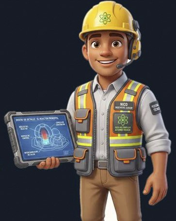

Acompañas a Nico, el técnico de Nucleatom, por el edificio del reactor de una central de agua a presión de cuatro lazos. La visita empieza fuera, sigue por el control de acceso y la esclusa de personal, y llega a la plataforma de recarga, desde la que se ve la tapa de la vasija.
Ilustraciones orientativas generadas con IA sobre un diseño genérico, hechas solo con información pública. No representan ninguna central concreta.